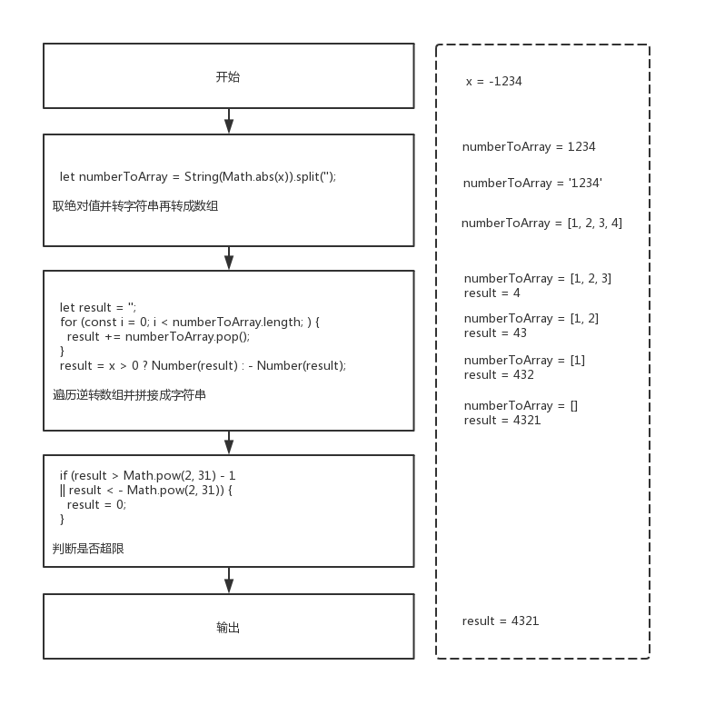
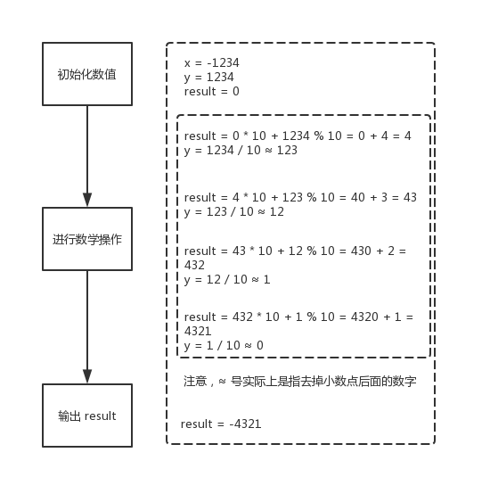

007 - 整数反转（reverse-integer）
Create by jsliang on 2019-05-19 09:42:39
Recently revised in 2019-05-19 16:04:13
Hello 小伙伴们，如果觉得本文还不错，记得给个 star ， 小伙伴们的 star 是我持续更新的动力！GitHub 地址
一 目录
不折腾的前端，和咸鱼有什么区别
| 目录 |
|---|
| 一 目录 |
| 二 前言 |
| 三 解题 |
| 3.1 解法 - 转字符串 |
| 3.2 解法 - 数学算法 |
二 前言
- 难度：简单
- 涉及知识：数组、数学
- 题目地址：https://leetcode-cn.com/problems/reverse-integer/
- 题目内容：
给出一个 32 位的有符号整数，你需要将这个整数中每位上的数字进行反转。
示例 1:
输入: 123
输出: 321
示例 2:
输入: -123
输出: -321
示例 3:
输入: 120
输出: 21
注意:
假设我们的环境只能存储得下 32 位的有符号整数，则其数值范围为 [−231, 231 − 1]。请根据这个假设，如果反转后整数溢出那么就返回 0。
三 解题
解题千千万，官方独一家，上面是官方使用 C++ / Java 进行的题解。
小伙伴可以先自己在本地尝试解题，再看看官方解题，最后再回来看看 jsliang 讲解下使用 JavaScript 的解题思路。
3.1 解法 - 转字符串
- 解题代码：
var reverse = function(x) {
// 转数组
let numberToArray = String(Math.abs(x)).split('');
// 转字符串
let result = '';
for (const i = 0; i < numberToArray.length; ) {
result += numberToArray.pop();
}
result = x > 0 ? Number(result) : - Number(result);
// 超 [-Math.pow(2, 31), Math.pow(2, 31) - 1] 判断
if (result > Math.pow(2, 31) - 1
|| result < - Math.pow(2, 31)) {
result = 0;
}
return result;
};
执行测试：
x：-1234return：
-4321
- LeetCode Submit：
✔ Accepted
✔ 1032/1032 cases passed (88 ms)
✔ Your runtime beats 99.53 % of javascript submissions
✔ Your memory usage beats 46.01 % of javascript submissions (35.8 MB)
知识点：
String：将其他值转成字符串。String详细介绍Number：将其他值转成数字值。Number详细介绍pop()：pop()方法从数组中删除最后一个元素，并返回该元素的值。此方法更改数组的长度。pop()详细介绍Math：JS 中的内置对象，具有数学常数和函数的属性和方法。Math详细介绍解题思路：

首先，将传入的数字 x 转换成字符串，并分割成数组。
然后，遍历该数组，将最后一个取出来放到 result 中。
最后，判断这个 result 是否超过题目限制，如果超过则变成 0 。
- 进一步思考：
3.2 解法 - 数学算法
- 解题代码：
var reverse = function(x) {
let result = 0;
let y = Math.abs(x);
while (y != 0) {
result = result * 10 + y % 10;
y = Math.floor(y / 10);
if (result > Math.pow(2, 31) - 1
|| result < -Math.pow(2, 31)) {
result = 0;
y = 0;
}
}
return x > 0 ? result : -result;
};
执行测试：
x：-1234return：
-4321
- LeetCode Submit：
✔ Accepted
✔ 1032/1032 cases passed (108 ms)
✔ Your runtime beats 97.4 % of javascript submissions
✔ Your memory usage beats 23.63 % of javascript submissions (36 MB)
知识点：
Math：JS 中的内置对象，具有数学常数和函数的属性和方法。Math详细介绍解题思路：

首先，我们初始化数值。
然后，我们需要知道的是，一个数对 10 取余，可以得到这个数的个位数；一个数乘于 10 并加上一个个位数，可以将这个数字放到末尾。
最后，我们判断一开始传入的数值正负，再返回对应结果即可。
jsliang 广告推送：
也许小伙伴想了解下云服务器
或者小伙伴想买一台云服务器
或者小伙伴需要续费云服务器
欢迎点击 云服务器推广 查看！


jsliang 的文档库 由 梁峻荣 采用 知识共享 署名-非商业性使用-相同方式共享 4.0 国际 许可协议进行许可。
基于https://github.com/LiangJunrong/document-library上的作品创作。
本许可协议授权之外的使用权限可以从 https://creativecommons.org/licenses/by-nc-sa/2.5/cn/ 处获得。